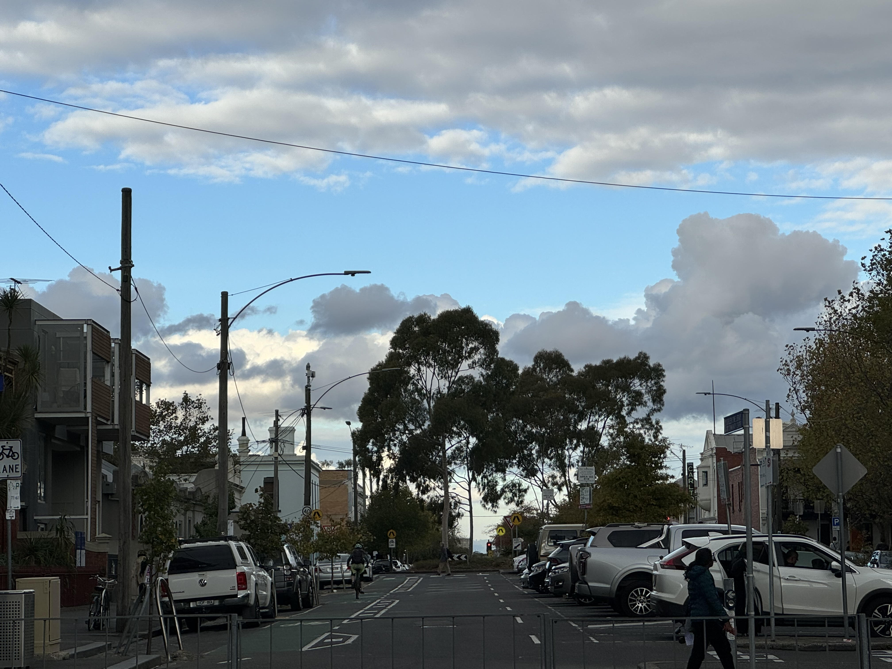
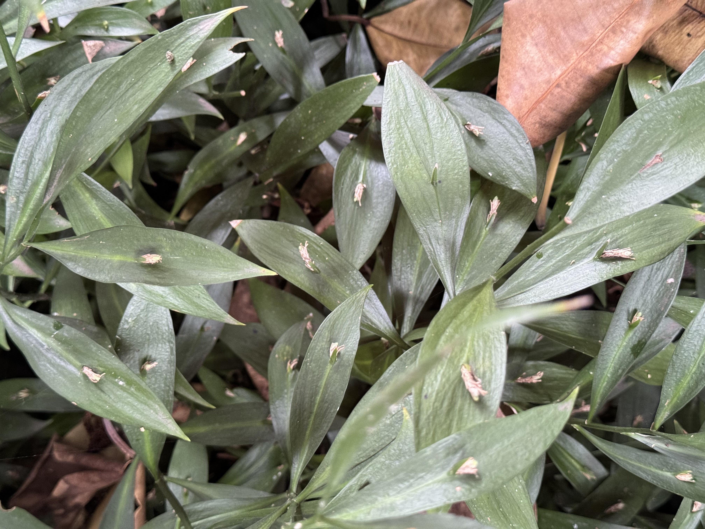
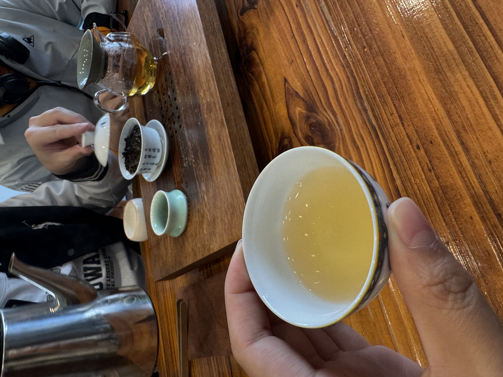
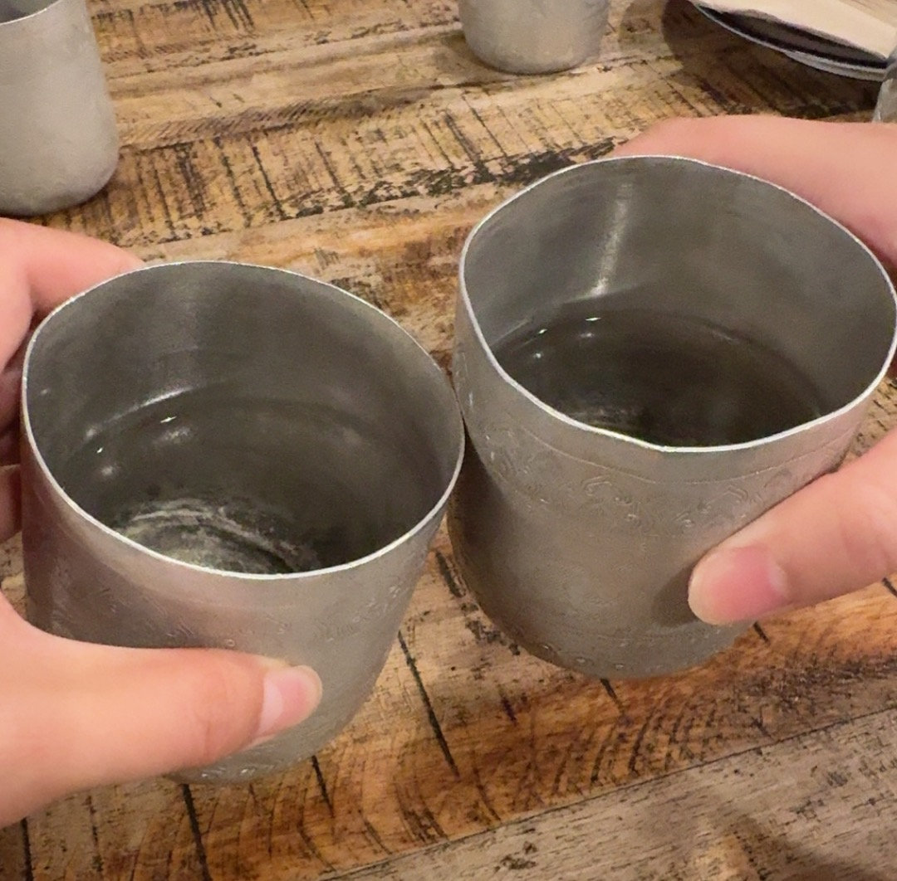

These memories took place after my trip to Tasmania, when I met my friends for the first time.
We strolled through the Royal Botanic Gardens in Melbourne, experiencing a serendipitous encounter that felt instantly familiar.
We strolled through the Royal Botanic Gardens in Melbourne, experiencing a serendipitous encounter that felt instantly familiar.


After wandering around, we went to a tea house and chatted for the afternoon. During dinner, we discovered that it was Leah's birthday!
